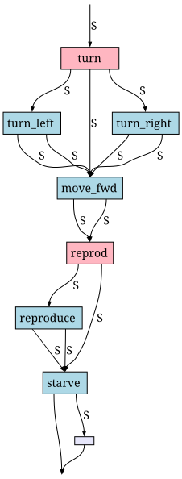
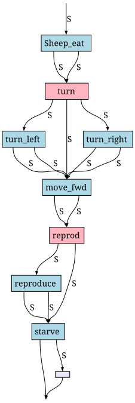
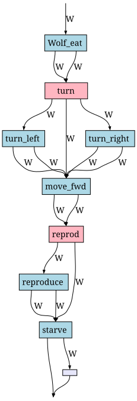
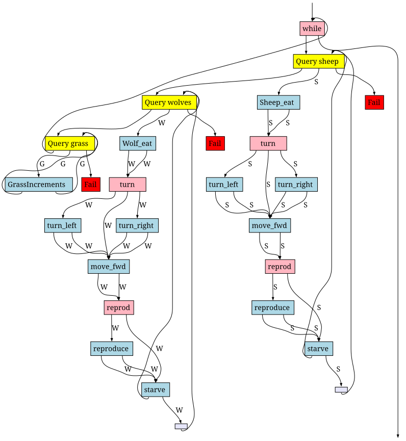

Lotka Volterra
This is a demonstration of a predator-prey agent-based model.
We start with importing some libraries.
using Catlab, AlgebraicRewriting
using Random, Test
using Catlab.Graphics.Graphviz: Attributes, Statement, Node
import Catlab.Graphics.Graphviz
const hom = homomorphism
const AV = AttrVar
const AV1 = AttrVar(1)
Random.seed!(123);Ontology
Defining an ontology is stating what data is required to specify a state of the simulation at some point in time. In AlgebraicJulia, this is done via declaring a Presentation, i.e. a database schema. Objects (Ob, or tables) are types of entities. Homs (Hom, or foreign keys) are functional relationships between the aforementioned entities. AttrTypes are placeholders for Julia types, which are assigned to Ob via attributes (Attr).
The schema below extends the schema for directed graphs, which consists in two tables (E and V, for edges and vertices) and two homs (src and tgt, E→V). It says there are two more types of entities, Sheep and Wolf, and they can be thought of as living on the graph due to homs sheep_loc and wolf_loc which assign each of them a vertex.
Furthermore, we want to give these entities some attributes. In this model, wolves and sheep both have "energy", given by Eng (a type variable, which we'll later instantiate with Int). Also, grass lives on vertices, and it's represented by an integer. countdown being zero means the grass is ready to eat, whereas a value above zero represents a counter of time the grass needs until it grows back.
There is also a direction attribute type, and the edges (as well as animals) will be oriented in a particular direction at any point in time.
@present SchLV <: SchGraph begin
(Sheep, Wolf)::Ob
sheep_loc::Hom(Sheep, V); wolf_loc::Hom(Wolf, V)
Time::Ob
countdown::Hom(Time, V);
Eng::AttrType
sheep_eng::Attr(Sheep, Eng); wolf_eng::Attr(Wolf, Eng)
Dir::AttrType
dir::Attr(E, Dir); sheep_dir::Attr(Sheep, Dir); wolf_dir::Attr(Wolf, Dir)
end
# efficient ABM rewriting uses BitSetParts rather than DenseParts to allow
# in-place pushout rewriting, rather than pure/non-mutating pushouts.)
@acset_type LV_Generic(SchLV, part_type=BitSetParts) <: HasGraph
const LV = LV_Generic{Int, Symbol}
const ℒ = ACSetCategory(MADVarACSetCat(LV()))
to_graphviz(SchLV; prog="dot")
-->
<!-- Title: G Pages: 1 -->
<svg width="737pt" height="133pt"
viewBox="0.00 0.00 737.00 133.00" xmlns="http://www.w3.org/2000/svg" xmlns:xlink="http://www.w3.org/1999/xlink">
<g id="graph0" class="graph" transform="scale(1 1) rotate(0) translate(4 129.25)">
<title>G</title>
<polygon fill="white" stroke="none" points="-4,4 -4,-129.25 732.74,-129.25 732.74,4 -4,4"/>
<!-- n1 -->
<g id="node1" class="node">
<title>n1</title>
<ellipse fill="none" stroke="black" cx="99" cy="-18" rx="27" ry="18"/>
<text xml:space="preserve" text-anchor="middle" x="99" y="-13.32" font-family="Times,serif" font-size="14.00">V</text>
</g>
<!-- n2 -->
<g id="node2" class="node">
<title>n2</title>
<ellipse fill="none" stroke="black" cx="27" cy="-107.25" rx="27" ry="18"/>
<text xml:space="preserve" text-anchor="middle" x="27" y="-102.58" font-family="Times,serif" font-size="14.00">E</text>
</g>
<!-- n2&%2345;>n1 -->
<g id="edge1" class="edge">
<title>n2&%2345;>n1</title>
<path fill="none" stroke="black" d="M39.54,-91.05C50.52,-77.75 66.66,-58.19 79.35,-42.81"/>
<polygon fill="black" stroke="black" points="81.73,-45.42 85.4,-35.48 76.33,-40.97 81.73,-45.42"/>
<text xml:space="preserve" text-anchor="middle" x="80.32" y="-57.95" font-family="Times,serif" font-size="14.00">src</text>
</g>
<!-- n2&%2345;>n1 -->
<g id="edge2" class="edge">
<title>n2&%2345;>n1</title>
<path fill="none" stroke="black" d="M24.68,-88.86C24.13,-77.97 25.18,-64.13 32,-54 39.54,-42.8 51.84,-34.95 63.85,-29.57"/>
<polygon fill="black" stroke="black" points="64.81,-32.95 72.8,-26.01 62.22,-26.45 64.81,-32.95"/>
<text xml:space="preserve" text-anchor="middle" x="42.5" y="-57.95" font-family="Times,serif" font-size="14.00">tgt</text>
</g>
<!-- n7 -->
<g id="node7" class="node">
<title>n7</title>
<ellipse fill="black" stroke="black" cx="335" cy="-18" rx="1.8" ry="1.8"/>
<text xml:space="preserve" text-anchor="middle" x="321.95" y="-23.75" font-family="Times,serif" font-size="14.00">Dir</text>
</g>
<!-- n2&%2345;>n7 -->
<g id="edge8" class="edge">
<title>n2&%2345;>n7</title>
<path fill="none" stroke="black" d="M47.46,-95.06C52.42,-92.78 57.8,-90.66 63,-89.25 152.15,-65.16 184.31,-105.67 270,-71.25 293.62,-61.76 315.46,-40.66 326.82,-28.38"/>
<polygon fill="black" stroke="black" points="329.24,-30.92 333.22,-21.1 323.98,-26.3 329.24,-30.92"/>
<text xml:space="preserve" text-anchor="middle" x="307.54" y="-57.95" font-family="Times,serif" font-size="14.00">dir</text>
</g>
<!-- n3 -->
<g id="node3" class="node">
<title>n3</title>
<ellipse fill="none" stroke="black" cx="335" cy="-107.25" rx="27" ry="18"/>
<text xml:space="preserve" text-anchor="middle" x="335" y="-102.58" font-family="Times,serif" font-size="14.00">Sheep</text>
</g>
<!-- n3&%2345;>n1 -->
<g id="edge3" class="edge">
<title>n3&%2345;>n1</title>
<path fill="none" stroke="black" d="M308.51,-102.45C280.7,-97.75 236.19,-88.23 201,-71.25 189.49,-65.7 189.02,-60.46 178,-54 163.67,-45.6 146.95,-37.91 132.59,-31.9"/>
<polygon fill="black" stroke="black" points="134.13,-28.75 123.55,-28.21 131.49,-35.23 134.13,-28.75"/>
<text xml:space="preserve" text-anchor="middle" x="235.5" y="-57.95" font-family="Times,serif" font-size="14.00">sheep_loc</text>
</g>
<!-- n6 -->
<g id="node6" class="node">
<title>n6</title>
<ellipse fill="black" stroke="black" cx="596" cy="-18" rx="1.8" ry="1.8"/>
<text xml:space="preserve" text-anchor="middle" x="579.95" y="-23.75" font-family="Times,serif" font-size="14.00">Eng</text>
</g>
<!-- n3&%2345;>n6 -->
<g id="edge6" class="edge">
<title>n3&%2345;>n6</title>
<path fill="none" stroke="black" d="M361.83,-103.38C392.72,-99.32 444.41,-90.18 485,-71.25 496.58,-65.85 496.85,-60.25 508,-54 533.6,-39.64 566.29,-28.29 583.74,-22.73"/>
<polygon fill="black" stroke="black" points="584.72,-26.09 593.25,-19.82 582.67,-19.4 584.72,-26.09"/>
<text xml:space="preserve" text-anchor="middle" x="545.5" y="-57.95" font-family="Times,serif" font-size="14.00">sheep_eng</text>
</g>
<!-- n3&%2345;>n7 -->
<g id="edge9" class="edge">
<title>n3&%2345;>n7</title>
<path fill="none" stroke="black" d="M335,-89.01C335,-72.09 335,-46.68 335,-31.58"/>
<polygon fill="black" stroke="black" points="338.5,-31.64 335,-21.64 331.5,-31.64 338.5,-31.64"/>
<text xml:space="preserve" text-anchor="middle" x="369.5" y="-57.95" font-family="Times,serif" font-size="14.00">sheep_dir</text>
</g>
<!-- n4 -->
<g id="node4" class="node">
<title>n4</title>
<ellipse fill="none" stroke="black" cx="605" cy="-107.25" rx="27" ry="18"/>
<text xml:space="preserve" text-anchor="middle" x="605" y="-102.58" font-family="Times,serif" font-size="14.00">Wolf</text>
</g>
<!-- n4&%2345;>n1 -->
<g id="edge4" class="edge">
<title>n4&%2345;>n1</title>
<path fill="none" stroke="black" d="M577.78,-105.52C541.03,-103.55 474.37,-96.46 424,-71.25 413.8,-66.14 415.39,-58.71 405,-54 381.08,-43.16 213.73,-28.35 137.13,-22.04"/>
<polygon fill="black" stroke="black" points="137.84,-18.59 127.59,-21.26 137.27,-25.57 137.84,-18.59"/>
<text xml:space="preserve" text-anchor="middle" x="452.5" y="-57.95" font-family="Times,serif" font-size="14.00">wolf_loc</text>
</g>
<!-- n4&%2345;>n6 -->
<g id="edge7" class="edge">
<title>n4&%2345;>n6</title>
<path fill="none" stroke="black" d="M628.09,-97.54C648.77,-88.32 674.24,-72.55 663,-54 651.25,-34.61 624.84,-25.45 608.91,-21.54"/>
<polygon fill="black" stroke="black" points="609.65,-18.12 599.16,-19.55 608.25,-24.98 609.65,-18.12"/>
<text xml:space="preserve" text-anchor="middle" x="697.24" y="-57.95" font-family="Times,serif" font-size="14.00">wolf_eng</text>
</g>
<!-- n4&%2345;>n7 -->
<g id="edge10" class="edge">
<title>n4&%2345;>n7</title>
<path fill="none" stroke="black" d="M602.27,-88.97C599.47,-77.25 593.92,-62.41 583,-54 545.71,-25.28 394.15,-20.11 348.24,-19.19"/>
<polygon fill="black" stroke="black" points="348.34,-15.69 338.28,-19.04 348.23,-22.69 348.34,-15.69"/>
<text xml:space="preserve" text-anchor="middle" x="624.4" y="-57.95" font-family="Times,serif" font-size="14.00">wolf_dir</text>
</g>
<!-- n5 -->
<g id="node5" class="node">
<title>n5</title>
<ellipse fill="none" stroke="black" cx="99" cy="-107.25" rx="27" ry="18"/>
<text xml:space="preserve" text-anchor="middle" x="99" y="-102.58" font-family="Times,serif" font-size="14.00">Time</text>
</g>
<!-- n5&%2345;>n1 -->
<g id="edge5" class="edge">
<title>n5&%2345;>n1</title>
<path fill="none" stroke="black" d="M99,-89.01C99,-77.18 99,-61.2 99,-47.5"/>
<polygon fill="black" stroke="black" points="102.5,-47.72 99,-37.72 95.5,-47.72 102.5,-47.72"/>
<text xml:space="preserve" text-anchor="middle" x="138" y="-57.95" font-family="Times,serif" font-size="14.00">countdown</text>
</g>
</g>
</svg>
)
We can further extend this schema with an additional attribute of (x,y) coordinates for every vertex. This is nice for visualization but is otherwise unnecessary when doing the actual agent-based modeling. So what we will do is build our model with the LV schema and then run our model with the LV′ schema.
@present SchLV′ <: SchLV begin
Coord::AttrType
coord::Attr(V, Coord)
end
@acset_type LV′_Generic(SchLV′, part_type=BitSetParts) <: HasGraph
const LV′ = LV′_Generic{Int, Symbol, Tuple{Int,Int}};
𝒟 = ACSetCategory(MADVarACSetCat(LV′()))Catlab.CategoricalAlgebra.Pointwise.CSets.ACSetCategory(Catlab.CategoricalAlgebra.Pointwise.PointwiseCats.MADVarACSetCats.MADVarACSetCat(Main.LV′_Generic{Int64, Symbol, Tuple{Int64, Int64}}), Dict{Symbol, Type}(:Cat => Catlab.CategoricalAlgebra.Cats.Categories.ConcreteCategory, :ACSHom => Catlab.CategoricalAlgebra.Pointwise.ACSetTransformations.ACSetTransformation, :Hom => Catlab.BasicSets.FinFunctions.FinFunction, :Op => Catlab.BasicSets.CopairedFinDomFunctions.CopairedFinDomFunction, :Sym => Symbol, :AttrType => Catlab.BasicSets.FinSets.FinSet, :Ob => Catlab.BasicSets.FinSets.FinSet, :Attr => Catlab.BasicSets.CopairedFinDomFunctions.CopairedFinDomFunction, :ACS => ACSets.ACSetInterface.ACSet, :Hetero => Catlab.CategoricalAlgebra.Pointwise.CSets.Heteromorphisms.ConcreteHeteroMorphism…))We will be representing directions as Symbols and encode the geometry via left and right functions. The attribute will only take values :N, :E, :W, or :S.
import Catlab.CategoricalAlgebra: left, right
function right(s::Symbol)
if s == :N
return :E
elseif s == :S
return :W
elseif s == :E
return :S
elseif s == :W
return :N
end
end
function left(s::Symbol)
if s == :N
return :W
elseif s == :S
return :E
elseif s == :E
return :N
elseif s == :W
return :S
end
end;Data migration functors
The schema LV has a certain symmetry between wolves and sheep, and this symmetry can be used to take instances of the schema (i.e. world states) and swap the wolves and the sheep. This is helpful for avoiding repeating work: there are certain actions that wolves and sheep share, so, by using this data migration, we can define them in terms of sheep and then migrate along F to obtain the analogous actions for wolves.
F = Migrate(
ℒ,
Dict(:Sheep => :Wolf, :Wolf => :Sheep, :Time=>:Time),
Dict([:sheep_loc => :wolf_loc, :wolf_loc => :sheep_loc,
:sheep_eng => :wolf_eng, :wolf_eng => :sheep_eng, :countdown => :countdown,
:sheep_dir => :wolf_dir, :wolf_dir => :sheep_dir,]), SchLV, LV);We ought to be able to take a state of the world (with no coordinate information) and obtain a state of the world with coordinates (the canonical way to do this is to assign "variables" for the values of the coordinates).
F2 = Migrate(𝒟, SchLV, LV, SchLV′, LV′; delta=false);Initializing and visualizing world states
To help us create initial states for simulations, here is a helper function that makes an n × n grid with periodic boundary conditions. Edges in each cardinal direction originate at every point.
function create_grid(n::Int)
lv = LV′()
coords = Dict()
for i in 0:n-1 # Initialize grass 50% green, 50% uniformly between 0-30
for j in 0:n-1
coords[i=>j] = add_part!(lv, :V; coord=(i, j))
add_parts!(lv, :Time, max(0, rand(-30:30)); countdown=coords[i=>j])
end
end
for i in 0:n-1
for j in 0:n-1
add_part!(lv, :E; src=coords[i=>j], tgt=coords[mod(i + 1, n)=>j], dir=:E)
add_part!(lv, :E; src=coords[i=>j], tgt=coords[mod(i - 1, n)=>j], dir=:W)
add_part!(lv, :E; src=coords[i=>j], tgt=coords[i=>mod(j + 1, n)], dir=:N)
add_part!(lv, :E; src=coords[i=>j], tgt=coords[i=>mod(j - 1, n)], dir=:S)
end
end
lv
end;To initialize a state of the world with sheep and wolves, we also accept parameters which indicate the fraction of spaces that are populated with that animal.
function initialize(n::Int, sheep::Float64, wolves::Float64)::LV′
grid = create_grid(n)
args = [(sheep, :Sheep, :sheep_loc, :sheep_eng, :sheep_dir),
(wolves, :Wolf, :wolf_loc, :wolf_eng, :wolf_dir)]
for (n_, name, loc, eng, d) in args
for _ in 1:round(Int, n_ * n^2)
dic = Dict([eng => 5, loc => rand(vertices(grid)),
d => rand([:N, :E, :S, :W])])
add_part!(grid, name; dic...)
end
end
grid
end;Some visualization code below will allow us to see states of the world. Edges are left implicit (we know from how the graphs were constructed that there are edges between every pair of adjacent vertices).
supscript_d = Dict(['1' => '¹', '2' => '²', '3' => '³', '4' => '⁴', '5' => '⁵', '6' => '⁶', '7' => '⁷', '8' => '⁸', '9' => '⁹', '0' => '⁰', 'x' => 'ˣ', 'y' => 'ʸ', 'z' => 'ᶻ', 'a' => 'ᵃ', 'b' => 'ᵇ', 'c' => 'ᶜ', 'd' => 'ᵈ'])
supscript(x::String) = join([get(supscript_d, c, c) for c in x]); # energy shown in superscript
function view_LV(p::ACSetTransformation, pth=tempname(); name="G", title="")
if nparts(dom(p), :Wolf) == 1
star = :Wolf => p[:Wolf](1)
elseif nparts(dom(p), :Sheep) == 1
star = :Sheep => p[:Sheep](1)
elseif nparts(dom(p), :V) == 1
star = :V => p[:V](1)
else
star = nothing
end
view_LV(codom(p), pth; name=name, title=title, star=star)
end
function view_LV(p::LV′, pth=tempname(); name="G", title="", star=nothing)
pstr = ["$(i),$(j)!" for (i, j) in p[:coord]]
stmts = Statement[]
for s in 1:nv(p)
st = (star == (:V => s)) ? "*" : ""
gv = length(incident(p, s, :countdown))
col = gv == 0 ? "lightgreen" : "tan"
push!(stmts, Node("v$s", Attributes(
:label => gv == 0 ? "" : string(gv) * st,
:shape => "circle",
:color => col, :pos => pstr[s])))
end
d = Dict([:E => (1, 0), :N => (0, 1), :S => (0, -1), :W => (-1, 0),])
args = [(:true, :Wolf, :wolf_loc, :wolf_eng, :wolf_dir),
(false, :Sheep, :sheep_loc, :sheep_eng, :sheep_dir)]
for (is_wolf, prt, loc, eng, dr) in args
for w in parts(p, prt)
st = (star == ((is_wolf ? :Wolf : :Sheep) => w)) ? "*" : ""
e = only(incident(p, p[w, loc], :src) ∩ incident(p, p[w, dr], :dir))
s = src(p, e)
dx, dy = d[p[e, :dir]]
(sx, sy) = p[s, :coord]
L, R = 0.25, 0.1
wx = sx + L * dx + R * rand()
wy = sy + L * dy + R * rand()
ID = "$(is_wolf ? :w : :s)$w"
append!(stmts, [Node(ID, Attributes(
:label => "$w" * supscript("$(p[w,eng])") * st,
:shape => "square", :width => "0.3px", :height => "0.3px", :fixedsize => "true",
:pos => "$(wx),$(wy)!", :color => is_wolf ? "red" : "lightblue"))])
end
end
g = Graphviz.Digraph(name, Statement[stmts...]; prog="neato",
graph_attrs=Attributes(:label => title, :labelloc => "t"),
node_attrs=Attributes(:shape => "plain", :style => "filled"))
open(pth, "w") do io
show(io, "image/svg+xml", g)
end
g
end
init = initialize(2, 0.5, 0.5)
view_LV(init)
-->
<!-- Title: G Pages: 1 -->
<svg width="138pt" height="122pt"
viewBox="0.00 0.00 138.00 122.00" xmlns="http://www.w3.org/2000/svg" xmlns:xlink="http://www.w3.org/1999/xlink">
<g id="graph0" class="graph" transform="scale(1 1) rotate(0) translate(4 117.85)">
<title>G</title>
<polygon fill="white" stroke="none" points="-4,4 -4,-117.85 134,-117.85 134,4 -4,4"/>
<!-- v1 -->
<g id="node1" class="node">
<title>v1</title>
<ellipse fill="tan" stroke="tan" cx="24.02" cy="-23.85" rx="18" ry="18"/>
<text xml:space="preserve" text-anchor="middle" x="24.02" y="-19.18" font-family="Times,serif" font-size="14.00">1</text>
</g>
<!-- v2 -->
<g id="node2" class="node">
<title>v2</title>
<ellipse fill="tan" stroke="tan" cx="24.02" cy="-95.85" rx="18" ry="18"/>
<text xml:space="preserve" text-anchor="middle" x="24.02" y="-91.18" font-family="Times,serif" font-size="14.00">5</text>
</g>
<!-- v3 -->
<g id="node3" class="node">
<title>v3</title>
<ellipse fill="tan" stroke="tan" cx="96.02" cy="-23.85" rx="23.85" ry="23.85"/>
<text xml:space="preserve" text-anchor="middle" x="96.02" y="-19.18" font-family="Times,serif" font-size="14.00">24</text>
</g>
<!-- v4 -->
<g id="node4" class="node">
<title>v4</title>
<ellipse fill="lightgreen" stroke="lightgreen" cx="96.02" cy="-95.85" rx="18" ry="18"/>
</g>
<!-- w1 -->
<g id="node5" class="node">
<title>w1</title>
<polygon fill="red" stroke="red" points="125.11,-38 103.51,-38 103.51,-16.4 125.11,-16.4 125.11,-38"/>
<text xml:space="preserve" text-anchor="middle" x="114.31" y="-22.52" font-family="Times,serif" font-size="14.00">1⁵</text>
</g>
<!-- w2 -->
<g id="node6" class="node">
<title>w2</title>
<polygon fill="red" stroke="red" points="91.43,-35.39 69.83,-35.39 69.83,-13.79 91.43,-13.79 91.43,-35.39"/>
<text xml:space="preserve" text-anchor="middle" x="80.63" y="-19.91" font-family="Times,serif" font-size="14.00">2⁵</text>
</g>
<!-- s1 -->
<g id="node7" class="node">
<title>s1</title>
<polygon fill="lightblue" stroke="lightblue" points="130,-38.78 108.4,-38.78 108.4,-17.18 130,-17.18 130,-38.78"/>
<text xml:space="preserve" text-anchor="middle" x="119.2" y="-23.31" font-family="Times,serif" font-size="14.00">1⁵</text>
</g>
<!-- s2 -->
<g id="node8" class="node">
<title>s2</title>
<polygon fill="lightblue" stroke="lightblue" points="21.6,-36.78 0,-36.78 0,-15.18 21.6,-15.18 21.6,-36.78"/>
<text xml:space="preserve" text-anchor="middle" x="10.8" y="-21.3" font-family="Times,serif" font-size="14.00">2⁵</text>
</g>
</g>
</svg>
)
Not only can we visualize states of the world, but we can visualize certain states of the world with certain distinguished agents, such as a sheep, wolf, or patch of grass. The way we specify a state of the world (X) with a distinguished sheep (for example) is a morphism S → X, where S is an ACSet with a single sheep in it.
Below we manually construct a generic sheep (in LV, which doesn't have coordinates). We then use the data migration to give it generic coordinates to obtain a generic LV′ sheep. We use this as the domain of a hom that assigns the sheep to Sheep #2 of the world state init from above.
S = @acset LV begin V=1; Sheep=1; Dir=1; Eng=1;
sheep_loc=1; sheep_dir=[AV1]; sheep_eng=[AV1];
end
view_LV(hom(F2(S), init; initial=(Sheep=[2],)))
-->
<!-- Title: G Pages: 1 -->
<svg width="140pt" height="122pt"
viewBox="0.00 0.00 140.00 122.00" xmlns="http://www.w3.org/2000/svg" xmlns:xlink="http://www.w3.org/1999/xlink">
<g id="graph0" class="graph" transform="scale(1 1) rotate(0) translate(4 117.85)">
<title>G</title>
<polygon fill="white" stroke="none" points="-4,4 -4,-117.85 135.71,-117.85 135.71,4 -4,4"/>
<!-- v1 -->
<g id="node1" class="node">
<title>v1</title>
<ellipse fill="tan" stroke="tan" cx="28.16" cy="-23.85" rx="18" ry="18"/>
<text xml:space="preserve" text-anchor="middle" x="28.16" y="-19.18" font-family="Times,serif" font-size="14.00">1</text>
</g>
<!-- v2 -->
<g id="node2" class="node">
<title>v2</title>
<ellipse fill="tan" stroke="tan" cx="28.16" cy="-95.85" rx="18" ry="18"/>
<text xml:space="preserve" text-anchor="middle" x="28.16" y="-91.18" font-family="Times,serif" font-size="14.00">5</text>
</g>
<!-- v3 -->
<g id="node3" class="node">
<title>v3</title>
<ellipse fill="tan" stroke="tan" cx="100.16" cy="-23.85" rx="23.85" ry="23.85"/>
<text xml:space="preserve" text-anchor="middle" x="100.16" y="-19.18" font-family="Times,serif" font-size="14.00">24</text>
</g>
<!-- v4 -->
<g id="node4" class="node">
<title>v4</title>
<ellipse fill="lightgreen" stroke="lightgreen" cx="100.16" cy="-95.85" rx="18" ry="18"/>
</g>
<!-- w1 -->
<g id="node5" class="node">
<title>w1</title>
<polygon fill="red" stroke="red" points="130.96,-41.73 109.36,-41.73 109.36,-20.13 130.96,-20.13 130.96,-41.73"/>
<text xml:space="preserve" text-anchor="middle" x="120.16" y="-26.26" font-family="Times,serif" font-size="14.00">1⁵</text>
</g>
<!-- w2 -->
<g id="node6" class="node">
<title>w2</title>
<polygon fill="red" stroke="red" points="99.31,-36.34 77.71,-36.34 77.71,-14.74 99.31,-14.74 99.31,-36.34"/>
<text xml:space="preserve" text-anchor="middle" x="88.51" y="-20.86" font-family="Times,serif" font-size="14.00">2⁵</text>
</g>
<!-- s1 -->
<g id="node7" class="node">
<title>s1</title>
<polygon fill="lightblue" stroke="lightblue" points="131.71,-35.6 110.11,-35.6 110.11,-14 131.71,-14 131.71,-35.6"/>
<text xml:space="preserve" text-anchor="middle" x="120.91" y="-20.13" font-family="Times,serif" font-size="14.00">1⁵</text>
</g>
<!-- s2 -->
<g id="node8" class="node">
<title>s2</title>
<polygon fill="lightblue" stroke="lightblue" points="21.6,-36.91 0,-36.91 0,-15.31 21.6,-15.31 21.6,-36.91"/>
<text xml:space="preserve" text-anchor="middle" x="10.8" y="-21.43" font-family="Times,serif" font-size="14.00">2⁵*</text>
</g>
</g>
</svg>
)
It will be helpful to not have to manually construct "generic" world states like above because it's tedious. We want to say "give me a sheep" or "give me a sheep and a wolf that are on the same vertex" and have it automatically specify the remaining information in the most generic way possible. The @acset_colim macro is perfect for exactly this. In order to use that macro, we need to compute something first with the yoneda_cache function.
gV, gE, gS, gW, gT, gEng, gD = ob_generators(FinCat(SchLV))
yLV = yoneda_cache(LV; clear=true); # cache=false means reuse cached results
I = LV() # Empty agent type
S = ob_map(yLV, gS) # Generic sheep agent
iS = id[ℒ](S)
W = ob_map(yLV, gW) # Generic wolf agent
E = ob_map(yLV, gE) # Generic edge
D = ob_map(yLV, gD) # Generic direction
T = ob_map(yLV, gT) # Generic time
Eng = ob_map(yLV, gEng) # Generic energy variable
G = ob_map(yLV, gV) # Generic grass agent
N = Names(Dict("W" => W, "S" => S, "G" => G, "" => I)); # give these ACSets namesRules
We have finished specifying what makes up a simulation state, and next is to define what sorts of transitions are possible. This is done by declaring rewrite rules. We also will put these rules into little boxes with an incoming wire and two outgoing wires (called a RuleApp), where wires correspond to the successful (resp. unsuccessful) application of the rewrite rule. In the next section we will focus on assembling these miniature wiring diagrams into an overall simulation.
Here we just note that the wires of the simulation must be labeled with an agent. This is because, at all points in time, there is a distinguished agent (i.e. a morphism A → X, where A is an ACSet with a generic something in it, e.g. a generic sheep like above). So when we wrap our rules into the RuleApp boxes, we need to also specify what those distinguished agents are and how they relate to the pattern + replacement of the rewrite rule within the box.
Rotating
Our first action that is possible for sheep (and wolves) is rotation. Animals will, with some probability, change their orientation. This is a rewrite rule which only modifies an attribute rather than changing any combinatorial data. We delete the sheep and recreate it.
GS_Eng = @withmodel TypedCatWithCoproducts(ℒ) (⊕) begin
hom(G⊕Eng, S; monic=true, cat=ℒ)
end
rl = Rule(GS_Eng,GS_Eng; expr=(Dir=[((s,),) -> left(s)],), cat=ℒ);
rr = Rule(GS_Eng,GS_Eng; expr=(Dir=[((s,),) -> right(s)],));
sheep_rotate_l = tryrule(RuleApp(:turn_left, rl, iS, iS));
sheep_rotate_r = tryrule(RuleApp(:turn_right, rr, iS, iS));We can imagine executing these rules in sequence
seq_sched = (sheep_rotate_l ⋅ sheep_rotate_r);
view_sched(seq_sched; names=N)
-->
<!-- Title: G Pages: 1 -->
<svg width="91pt" height="225pt"
viewBox="0.00 0.00 91.00 225.00" xmlns="http://www.w3.org/2000/svg" xmlns:xlink="http://www.w3.org/1999/xlink">
<g id="graph0" class="graph" transform="scale(1 1) rotate(0) translate(4 221.13)">
<title>G</title>
<polygon fill="white" stroke="none" points="-4,4 -4,-221.13 86.75,-221.13 86.75,4 -4,4"/>
<!-- n0in1 -->
<!-- n1 -->
<!-- turn_left -->
<g id="n1" class="node">
<title>n1</title>
<polygon fill="lightblue" stroke="none" points="77.12,-162.44 5.62,-162.44 5.62,-135.19 77.12,-135.19 77.12,-162.44"/>
<polygon fill="none" stroke="black" points="5.62,-135.19 5.62,-162.44 77.12,-162.44 77.12,-135.19 5.62,-135.19"/>
<text xml:space="preserve" text-anchor="start" x="10.62" y="-143.94" font-family="Serif" font-size="14.00">turn_left</text>
</g>
<!-- n0in1&%2345;>n1 -->
<!-- S -->
<g id="e1" class="edge">
<title>n0in1:s&%2345;>n1:n</title>
<path fill="none" stroke="black" d="M41.38,-215.69C41.38,-194.24 41.38,-187.37 41.38,-168.66"/>
<polygon fill="black" stroke="black" points="43.13,-168.95 41.38,-163.95 39.63,-168.95 43.13,-168.95"/>
<text xml:space="preserve" text-anchor="middle" x="46.25" y="-184.39" font-family="Serif" font-size="14.00">S</text>
</g>
<!-- n0out1 -->
<!-- n2 -->
<!-- turn_right -->
<g id="n2" class="node">
<title>n2</title>
<polygon fill="lightblue" stroke="none" points="82.75,-81.94 0,-81.94 0,-54.69 82.75,-54.69 82.75,-81.94"/>
<polygon fill="none" stroke="black" points="0,-54.69 0,-81.94 82.75,-81.94 82.75,-54.69 0,-54.69"/>
<text xml:space="preserve" text-anchor="start" x="5" y="-63.44" font-family="Serif" font-size="14.00">turn_right</text>
</g>
<!-- n1&%2345;>n2 -->
<!-- S -->
<g id="e2" class="edge">
<title>n1:s&%2345;>n2:n</title>
<path fill="none" stroke="black" d="M59.25,-135.19C59.25,-112.57 44.57,-107.72 41.82,-88.43"/>
<polygon fill="black" stroke="black" points="43.56,-88.32 41.48,-83.45 40.07,-88.56 43.56,-88.32"/>
<text xml:space="preserve" text-anchor="middle" x="59.81" y="-103.89" font-family="Serif" font-size="14.00">S</text>
</g>
<!-- n1&%2345;>n2 -->
<!-- S -->
<g id="e3" class="edge">
<title>n1:s&%2345;>n2:n</title>
<path fill="none" stroke="black" d="M23.5,-135.19C23.5,-119.11 25.94,-114.98 31.62,-99.94 33.89,-93.96 37.79,-91.99 39.91,-88.18"/>
<polygon fill="black" stroke="black" points="41.59,-88.68 41.03,-83.41 38.18,-87.88 41.59,-88.68"/>
<text xml:space="preserve" text-anchor="middle" x="36.5" y="-103.89" font-family="Serif" font-size="14.00">S</text>
</g>
<!-- n2&%2345;>n0out1 -->
<!-- S -->
<g id="e4" class="edge">
<title>n2:s&%2345;>n0out1:n</title>
<path fill="none" stroke="black" d="M62.06,-54.69C62.06,-31.58 44.93,-27.46 41.85,-7.76"/>
<polygon fill="black" stroke="black" points="43.6,-7.81 41.49,-2.95 40.11,-8.07 43.6,-7.81"/>
<text xml:space="preserve" text-anchor="middle" x="61.94" y="-23.39" font-family="Serif" font-size="14.00">S</text>
</g>
<!-- n2&%2345;>n0out1 -->
<!-- S -->
<g id="e5" class="edge">
<title>n2:s&%2345;>n0out1:n</title>
<path fill="none" stroke="black" d="M20.69,-54.69C20.69,-38.15 26.34,-34.74 32.62,-19.44 35,-13.65 38.36,-11.5 40.15,-7.64"/>
<polygon fill="black" stroke="black" points="41.83,-8.17 41.08,-2.92 38.39,-7.49 41.83,-8.17"/>
<text xml:space="preserve" text-anchor="middle" x="37.5" y="-23.39" font-family="Serif" font-size="14.00">S</text>
</g>
</g>
</svg>
)
... or in parallel.
par_sched = (sheep_rotate_l ⊗ sheep_rotate_r);
view_sched(par_sched; names=N)
-->
<!-- Title: G Pages: 1 -->
<svg width="180pt" height="145pt"
viewBox="0.00 0.00 180.00 145.00" xmlns="http://www.w3.org/2000/svg" xmlns:xlink="http://www.w3.org/1999/xlink">
<g id="graph0" class="graph" transform="scale(1 1) rotate(0) translate(4 140.63)">
<title>G</title>
<polygon fill="white" stroke="none" points="-4,4 -4,-140.63 176.12,-140.63 176.12,4 -4,4"/>
<!-- n0in1 -->
<!-- n0in2 -->
<!-- n0in1&%2345;>n0in2 -->
<!-- n1 -->
<!-- turn_left -->
<g id="n1" class="node">
<title>n1</title>
<polygon fill="lightblue" stroke="none" points="71.5,-81.94 0,-81.94 0,-54.69 71.5,-54.69 71.5,-81.94"/>
<polygon fill="none" stroke="black" points="0,-54.69 0,-81.94 71.5,-81.94 71.5,-54.69 0,-54.69"/>
<text xml:space="preserve" text-anchor="start" x="5" y="-63.44" font-family="Serif" font-size="14.00">turn_left</text>
</g>
<!-- n0in1&%2345;>n1 -->
<!-- S -->
<g id="e1" class="edge">
<title>n0in1:s&%2345;>n1:n</title>
<path fill="none" stroke="black" d="M62.75,-135.19C62.75,-110.94 40.19,-108.7 36.31,-88.23"/>
<polygon fill="black" stroke="black" points="38.07,-88.27 35.89,-83.45 34.59,-88.58 38.07,-88.27"/>
<text xml:space="preserve" text-anchor="middle" x="61.79" y="-103.89" font-family="Serif" font-size="14.00">S</text>
</g>
<!-- n2 -->
<!-- turn_right -->
<g id="n2" class="node">
<title>n2</title>
<polygon fill="lightblue" stroke="none" points="172.12,-81.94 89.38,-81.94 89.38,-54.69 172.12,-54.69 172.12,-81.94"/>
<polygon fill="none" stroke="black" points="89.38,-54.69 89.38,-81.94 172.12,-81.94 172.12,-54.69 89.38,-54.69"/>
<text xml:space="preserve" text-anchor="start" x="94.38" y="-63.44" font-family="Serif" font-size="14.00">turn_right</text>
</g>
<!-- n0in2&%2345;>n2 -->
<!-- S -->
<g id="e2" class="edge">
<title>n0in2:s&%2345;>n2:n</title>
<path fill="none" stroke="black" d="M125.75,-135.19C125.75,-113.65 129.86,-106.94 130.63,-88.18"/>
<polygon fill="black" stroke="black" points="132.37,-88.49 130.72,-83.45 128.87,-88.42 132.37,-88.49"/>
<text xml:space="preserve" text-anchor="middle" x="134.42" y="-103.89" font-family="Serif" font-size="14.00">S</text>
</g>
<!-- n0out1 -->
<!-- n0out2 -->
<!-- n0out1&%2345;>n0out2 -->
<!-- n1&%2345;>n0out1 -->
<!-- S -->
<g id="e5" class="edge">
<title>n1:s&%2345;>n0out1:n</title>
<path fill="none" stroke="black" d="M17.88,-54.69C17.88,-38.96 12.58,-32.73 21,-19.44 28.02,-8.36 44.5,-14.15 49.96,-7.47"/>
<polygon fill="black" stroke="black" points="51.57,-8.18 51.32,-2.89 48.22,-7.19 51.57,-8.18"/>
<text xml:space="preserve" text-anchor="middle" x="25.88" y="-23.39" font-family="Serif" font-size="14.00">S</text>
</g>
<!-- n1&%2345;>n0out1 -->
<!-- S -->
<g id="e6" class="edge">
<title>n1:s&%2345;>n0out1:n</title>
<path fill="none" stroke="black" d="M53.62,-54.69C53.62,-33.23 52.09,-26.38 51.8,-7.66"/>
<polygon fill="black" stroke="black" points="53.55,-7.94 51.76,-2.95 50.05,-7.97 53.55,-7.94"/>
<text xml:space="preserve" text-anchor="middle" x="58.05" y="-23.39" font-family="Serif" font-size="14.00">S</text>
</g>
<!-- n2&%2345;>n0out2 -->
<!-- S -->
<g id="e3" class="edge">
<title>n2:s&%2345;>n0out2:n</title>
<path fill="none" stroke="black" d="M110.06,-54.69C110.06,-33.24 110.63,-26.37 110.73,-7.66"/>
<polygon fill="black" stroke="black" points="112.48,-7.96 110.75,-2.95 108.98,-7.95 112.48,-7.96"/>
<text xml:space="preserve" text-anchor="middle" x="115.46" y="-23.39" font-family="Serif" font-size="14.00">S</text>
</g>
<!-- n2&%2345;>n0out2 -->
<!-- S -->
<g id="e4" class="edge">
<title>n2:s&%2345;>n0out2:n</title>
<path fill="none" stroke="black" d="M151.44,-54.69C151.44,-35.04 136.71,-35.03 124.75,-19.44 120.22,-13.54 114.79,-12.06 112.23,-7.68"/>
<polygon fill="black" stroke="black" points="113.96,-7.37 111.1,-2.91 110.55,-8.18 113.96,-7.37"/>
<text xml:space="preserve" text-anchor="middle" x="148.67" y="-23.39" font-family="Serif" font-size="14.00">S</text>
</g>
</g>
</svg>
)
Test rotation
begin
ex = @acset LV begin
E=1; Sheep=1; V=2; Time=2
src=1; tgt=2; dir=:W; countdown = [1, 2]
sheep_loc=1; sheep_eng=100; sheep_dir=:N
end;
expected = copy(ex);
expected[:sheep_dir] = :W
m = homomorphism(S, ex);
l = left(rl);
p = ComposablePair(l, m);
k, g = pushout_complement[ℒ](p);
K = dom(g)
rewrite(rl, ex; cat=ℒ)
@test is_isomorphic(rewrite(rl, ex; cat=ℒ), expected; cat=ℒ)
rewrite!(rl, ex; cat=ℒ)
@test is_isomorphic(ex, expected)
end;Moving forward
s_fwd_l = @acset LV begin
V=2; E=1; Sheep=1; Eng=1; Dir=1;
src=2; tgt=1; dir=[AV1];
sheep_loc=2; sheep_eng=[AV1]; sheep_dir=[AV1]
end
s_fwd_i = E
s_fwd_r = @acset LV begin
V=2; E=1; Sheep=1; Eng=1; Dir=1;
src=1; tgt=2; dir=[AV1];
sheep_loc=2; sheep_eng=[AV1]; sheep_dir=[AV1]
end
s_n = sub_vars(s_fwd_l, Dict(:Eng=>[0],), Dict(); cat=ℒ)
sheep_fwd_rule = Rule(
hom(s_fwd_i, s_fwd_l; monic=true),
hom(s_fwd_i, s_fwd_r; monic=true),
ac=[NAC(s_n)],
expr=(Eng=[vs -> only(vs) - 1],));
sheep_fwd = tryrule(RuleApp(:move_fwd, sheep_fwd_rule,
hom(S, s_fwd_l), hom(S, s_fwd_r)));Moving forward test
begin
ex = @acset LV begin
V=3; E=2; Sheep=1; Time=4
countdown=[1,2,2,3]
src=[1,2]; tgt=[2,3]; dir=[:N,:W]
sheep_loc=1; sheep_dir=:N; sheep_eng = 10
end
expected = copy(ex);
expected[:sheep_loc] = 2
expected[:sheep_eng] = 9
@test is_isomorphic(expected, rewrite(sheep_fwd_rule, ex; cat=ℒ); cat=ℒ)
rewrite!(sheep_fwd_rule, ex; cat=ℒ)
@test is_isomorphic(ex, expected)
end;Sheep eat grass
function add_time(lv::LV, n::Int)
res = deepcopy(lv)
add_parts!(res, :Time, n; countdown=1)
res
end
s_eat_nac = @acset LV begin
V=1; Sheep=1; Time=1; Dir=1; Eng=1
sheep_loc=1; sheep_eng=[AV1]; sheep_dir=[AV1]; countdown=1
end
GD = ob(coproduct[ℒ](G,D))
GS_Dir = hom(GD, S; monic=true)
GS_Dir30 = hom(GD, add_time(S, 30); monic=true)
se_rule = Rule(GS_Dir,GS_Dir30; expr=(Eng=[vs -> only(vs) + 4],),
ac=[NAC(hom(S, s_eat_nac))]);
S_to_S30 = hom(S, add_time(S, 30))
sheep_eat = tryrule(RuleApp(:Sheep_eat, se_rule, id[ℒ](S), S_to_S30));Sheep eating test
ex = @acset LV begin
E=1; V=2; Sheep=1; Time=2
src=1; tgt=2; dir=:S; countdown=[1,1]
sheep_loc = 2; sheep_eng = 3; sheep_dir=:W
end
expected = @acset LV begin
E=1; V=2; Sheep=1; Time=32
src=1; tgt=2; dir=:S; countdown=[1,1, fill(2, 30)...]
sheep_loc = 2; sheep_eng = 7; sheep_dir=:W
end
@test is_isomorphic(expected, rewrite(se_rule, ex; cat=ℒ); cat=ℒ)
rewrite!(se_rule, ex; cat=ℒ)
@test is_isomorphic(ex, expected);Wolves eat sheep
w_eat_l = @acset LV begin
V=1; Sheep=1; Wolf=1; Eng=2; Dir=2
sheep_loc=1; sheep_eng=[AV1]; sheep_dir=[AV1]
wolf_loc=1; wolf_eng=[AV(2)]; wolf_dir=[AV(2)]
end
GWS_Dir = hom(GD, w_eat_l; initial=(Dir=[AV(2)],))
GW_Dir = hom(GD, W; monic=true,)ACSetTransformation((Eng = Catlab.BasicSets.CopairedFinDomFunctions.CopairedFinDomFunction{Int64, Int64, Int64}(FinFunction(Dict{Any, Any}(), Catlab.BasicSets.EitherSets.EitherSet{Catlab.BasicSets.FinSets.FinSet, Catlab.BasicSets.Sets.SetOb, Union{GATlab.Util.Eithers.Left{Int64}, GATlab.Util.Eithers.Right{Int64}}}(FinSet(Set([1])), TypeSet(Int64))), TypeSet(Int64), FinSet(Set{Int64}()), FinSet(Set([1]))), Wolf = FinFunction(Dict{Int64, Int64}(), FinSet(Set([1]))), Dir = Catlab.BasicSets.CopairedFinDomFunctions.CopairedFinDomFunction{Symbol, Int64, Int64}(FinFunction(Dict{Int64, GATlab.Util.Eithers.Left{Int64}}(1 => GATlab.Util.Eithers.Left{Int64}(1)), Catlab.BasicSets.EitherSets.EitherSet{Catlab.BasicSets.FinSets.FinSet, Catlab.BasicSets.Sets.SetOb, Union{GATlab.Util.Eithers.Left{Int64}, GATlab.Util.Eithers.Right{Symbol}}}(FinSet(Set([1])), TypeSet(Symbol))), TypeSet(Symbol), FinSet(Set([1])), FinSet(Set([1]))), V = FinFunction(Dict(1 => 1), FinSet(Set([1]))), Sheep = FinFunction(Dict{Int64, Int64}(), FinSet(Set{Int64}())), E = FinFunction(Dict{Int64, Int64}(), FinSet(Set{Int64}())), Time = FinFunction(Dict{Int64, Int64}(), FinSet(Set{Int64}()))), )wolf energy is energy variable #2.
we_rule = Rule(GWS_Dir, GW_Dir, expr=(Eng=[vs -> vs[2] + 20],));
wolf_eat = tryrule(RuleApp(:Wolf_eat, we_rule, hom(W, w_eat_l), id[ℒ](W)));Wolf eating test
ex = @acset LV begin
Sheep=1; Wolf=1; V=3; E=2; Time=3;
src=[1,2]; tgt=[2,3]; countdown=[1,2,3]; dir=[:N,:N];
sheep_loc=2; sheep_eng=[3]; sheep_dir=[:N]
wolf_loc=[2]; wolf_eng=[16]; wolf_dir=[:S]
end
expected = copy(ex)
expected[1, :wolf_eng] = 36
rem_part!(expected, :Sheep, 1)
res = rewrite(we_rule,ex; cat=ℒ)
@test is_isomorphic(res, expected; cat=ℒ)
rewrite!(we_rule, ex; cat=ℒ)
@test is_isomorphic(ex,expected; cat=ℒ);Sheep starvation
s_die_l = codom(sub_vars(S,Dict(:Eng=>[0],), Dict(); cat=ℒ))
sheep_die_rule = Rule(hom(G, s_die_l; cat=ℒ), id[ℒ](G))
sheep_starve = (RuleApp(:starve, sheep_die_rule,
hom(S, s_die_l), create[ℒ](G))
⋅
(id([I]) ⊗ Weaken(create[ℒ](S))) ⋅ merge_wires(I));Sheep starvation test
ex = @acset LV begin
V=1; Sheep=1; Wolf=1; Time=1
countdown=[1];
sheep_loc=1; sheep_eng=0; sheep_dir=:W
wolf_loc=1; wolf_eng=10; wolf_dir=:S
end
expected = copy(ex)
rem_part!(expected, :Sheep, 1)
@test is_isomorphic(rewrite(sheep_die_rule,ex; cat=ℒ), expected)
rewrite!(sheep_die_rule,ex; cat=ℒ)
@test is_isomorphic(ex, expected);Reproduction
s_reprod_r = @acset LV begin
V=1; Sheep=2; Eng=2; Dir=2;
sheep_loc=[1]; sheep_eng=[AV1, AV(2)]; sheep_dir=[AV1, AV(2)]
end;
sheep_reprod_rule = Rule(
hom(G, S; cat=ℒ,),
hom(G, s_reprod_r; cat=ℒ,);
cat=ℒ,
expr=(Dir=fill(((dₛ,),)->dₛ ,2),
Eng=fill(((eₛ,),) -> round(Int, eₛ / 2, RoundUp), 2),)
);
sheep_reprod = RuleApp(:reproduce, sheep_reprod_rule,
id[ℒ](S), hom(S, s_reprod_r; any=true)) |> tryrule;Reproduction test
ex = @acset LV begin
Sheep=1; Wolf=1; V=2; Time=2
countdown=[1,2]
sheep_loc=1; sheep_eng=10; sheep_dir=:W
wolf_loc=2; wolf_eng=5; wolf_dir=:N
end
expected = copy(ex)
add_part!(expected,:Sheep)
expected[:sheep_eng] = [5, 5]
expected[:sheep_loc] = [1, 1]
expected[:sheep_dir] = [:W, :W]
@test is_isomorphic(rewrite(sheep_reprod_rule,ex; cat=ℒ,),expected)
rewrite!(sheep_reprod_rule,ex; cat=ℒ)
@test is_isomorphic(ex, expected);Grass increments
g_inc_rule = Rule(hom(G, T; cat=ℒ), id[ℒ](G); cat=ℒ);
g_inc = RuleApp(:GrassIncrements, g_inc_rule, G; cat=ℒ) |> tryrule;Grass incrementing test
ex = @acset LV begin
Sheep = 1; V = 3; E = 2; Time=3
src = [1, 2]; tgt = [2, 3]
sheep_loc = 2; sheep_eng = [3]; sheep_dir = [:N]
countdown = [2,2,2]; dir = fill(:N, 2)
end
expected = deepcopy(ex);
rem_part!(expected, :Time, 1)
m = homomorphism(T, ex; any=true, cat=ℒ)
rwres = rewrite(g_inc_rule, ex; cat=ℒ)
@test is_isomorphic(rwres, expected; cat=ℒ)
rewrite!(g_inc_rule, ex; cat=ℒ)
@test is_isomorphic(ex, expected);Assembling rules into a recipe
Now we can assemble our building block transitions into a large wiring diagram characterizing the flow of the overall ABM simulation. In addition to the blue rewrite rule blocks, we have red (probabilistic) control flow blocks and yellow Query blocks.
general = mk_sched((;), (init=:S,), N, (
turn=const_cond([1.0, 2.0, 1.0], S; name=:turn),
maybe=const_cond([0.1, 0.9], S; name=:reprod),
lft=sheep_rotate_l,
rght=sheep_rotate_r,
fwd=sheep_fwd,
repro=sheep_reprod,
starve=sheep_starve),
quote
out_l, out_str, out_r = turn(init)
moved = fwd([lft(out_l), out_str, rght(out_r)])
out_repro, out_no_repro = maybe(moved)
return starve([repro(out_repro), out_no_repro])
end);
view_sched(general; names=N)
The above was content common to wolves and sheep. The difference is how they eat.
sheep = sheep_eat ⋅ general; # executed once per sheep
view_sched(sheep; names=N)
We use the swap data migration functor F to translate the sheep routine into a wolf one so that it can be composed with the wolf eating step.
wolf = wolf_eat ⋅ F(general); # executed once per wolf
view_sched(wolf; names=N)
Do all sheep, then all wolves, then all daily operations
cycle = (agent(sheep; n=:sheep, ret=I)
⋅
agent(wolf; n=:wolves, ret=I)
⋅
agent(g_inc; n=:grass))
view_sched(cycle; names=N)
#=
Wrap the whole thing in a while loop. Also apply the F2 migration to give
everything coordinates.
=#
overall = while_schedule(cycle, curr -> nparts(curr, :Wolf) >= 0) |> F2
view_sched(overall; names=F2(N))
Running the simulation
X = initialize(3, 0.25, 0.25); # 3 × 3 grid, 2 sheep + wolvesEncourage something exciting to happen by placing a wolf on top of a sheep
X[1, :wolf_loc] = X[1, :sheep_loc]
X[1, :wolf_dir] = X[1, :sheep_dir]
view_LV(X)
-->
<!-- Title: G Pages: 1 -->
<svg width="210pt" height="188pt"
viewBox="0.00 0.00 210.00 188.00" xmlns="http://www.w3.org/2000/svg" xmlns:xlink="http://www.w3.org/1999/xlink">
<g id="graph0" class="graph" transform="scale(1 1) rotate(0) translate(4 184)">
<title>G</title>
<polygon fill="white" stroke="none" points="-4,4 -4,-184 205.92,-184 205.92,4 -4,4"/>
<!-- v1 -->
<g id="node1" class="node">
<title>v1</title>
<ellipse fill="lightgreen" stroke="lightgreen" cx="23.85" cy="-18" rx="18" ry="18"/>
</g>
<!-- v2 -->
<g id="node2" class="node">
<title>v2</title>
<ellipse fill="tan" stroke="tan" cx="23.85" cy="-90" rx="23.85" ry="23.85"/>
<text xml:space="preserve" text-anchor="middle" x="23.85" y="-85.32" font-family="Times,serif" font-size="14.00">13</text>
</g>
<!-- v3 -->
<g id="node3" class="node">
<title>v3</title>
<ellipse fill="lightgreen" stroke="lightgreen" cx="23.85" cy="-162" rx="18" ry="18"/>
</g>
<!-- v4 -->
<g id="node4" class="node">
<title>v4</title>
<ellipse fill="lightgreen" stroke="lightgreen" cx="95.85" cy="-18" rx="18" ry="18"/>
</g>
<!-- v5 -->
<g id="node5" class="node">
<title>v5</title>
<ellipse fill="tan" stroke="tan" cx="95.85" cy="-90" rx="18" ry="18"/>
<text xml:space="preserve" text-anchor="middle" x="95.85" y="-85.32" font-family="Times,serif" font-size="14.00">5</text>
</g>
<!-- v6 -->
<g id="node6" class="node">
<title>v6</title>
<ellipse fill="lightgreen" stroke="lightgreen" cx="95.85" cy="-162" rx="18" ry="18"/>
</g>
<!-- v7 -->
<g id="node7" class="node">
<title>v7</title>
<ellipse fill="lightgreen" stroke="lightgreen" cx="167.85" cy="-18" rx="18" ry="18"/>
</g>
<!-- v8 -->
<g id="node8" class="node">
<title>v8</title>
<ellipse fill="lightgreen" stroke="lightgreen" cx="167.85" cy="-90" rx="18" ry="18"/>
</g>
<!-- v9 -->
<g id="node9" class="node">
<title>v9</title>
<ellipse fill="lightgreen" stroke="lightgreen" cx="167.85" cy="-162" rx="18" ry="18"/>
</g>
<!-- w1 -->
<g id="node10" class="node">
<title>w1</title>
<polygon fill="red" stroke="red" points="41.14,-53.03 19.54,-53.03 19.54,-31.43 41.14,-31.43 41.14,-53.03"/>
<text xml:space="preserve" text-anchor="middle" x="30.34" y="-37.55" font-family="Times,serif" font-size="14.00">1⁵</text>
</g>
<!-- w2 -->
<g id="node11" class="node">
<title>w2</title>
<polygon fill="red" stroke="red" points="201.92,-101.54 180.32,-101.54 180.32,-79.94 201.92,-79.94 201.92,-101.54"/>
<text xml:space="preserve" text-anchor="middle" x="191.12" y="-86.07" font-family="Times,serif" font-size="14.00">2⁵</text>
</g>
<!-- s1 -->
<g id="node12" class="node">
<title>s1</title>
<polygon fill="lightblue" stroke="lightblue" points="38.88,-52.63 17.28,-52.63 17.28,-31.03 38.88,-31.03 38.88,-52.63"/>
<text xml:space="preserve" text-anchor="middle" x="28.08" y="-37.15" font-family="Times,serif" font-size="14.00">1⁵</text>
</g>
<!-- s2 -->
<g id="node13" class="node">
<title>s2</title>
<polygon fill="lightblue" stroke="lightblue" points="198.26,-178.98 176.66,-178.98 176.66,-157.38 198.26,-157.38 198.26,-178.98"/>
<text xml:space="preserve" text-anchor="middle" x="187.46" y="-163.51" font-family="Times,serif" font-size="14.00">2⁵</text>
</g>
</g>
</svg>
)
Run the simulation for 100 steps
res = interpret(overall, X; maxstep=100, cat=𝒟);
length(res)61Visualizing the results
Run this line to view the trajectory in the generated traj folder
view_traj(overall, res[1:10], view_LV; agent=true, names=F2(N));